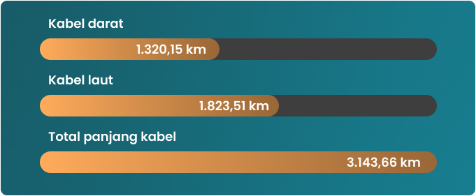

About Center Palapa Ring
Palapa Ring Tengah merupakan bagian dari Proyek KPBU (Kerjasama Pemerintah dengan Badan Usaha) dengan model kerjasama Bangun Milik Guna Serah (Build Own Operate Transfer/BOOT). Proyek ini mencakup pembangunan jaringan serat optik di wilayah Kalimantan, Sulawesi, dan Kepulauan Maluku Utara, dengan cakupan 17 kabupaten di wilayah tersebut.
